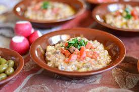

Fool

Description
A traditional breakfast for egyptians and it won't be changing anytime soon.
It's tasteful fava beans combined with some carefully chosen ingrediants makes
this my all-time favourite breakfast. Sorry, not sorry cereal folks
Ingrediants
- Fava beans
- lemon
- garlic
- salt
- tomatoes, onions, olives, and whatever you might think of would taste good
- sunflower oil/olive oil till visible oil around the plate is seen
Steps
- soak fresh fava beans in water and leave to boil with cut in half tomatoes until bean is soft and squishable
- add ingrediants until taste is delightful